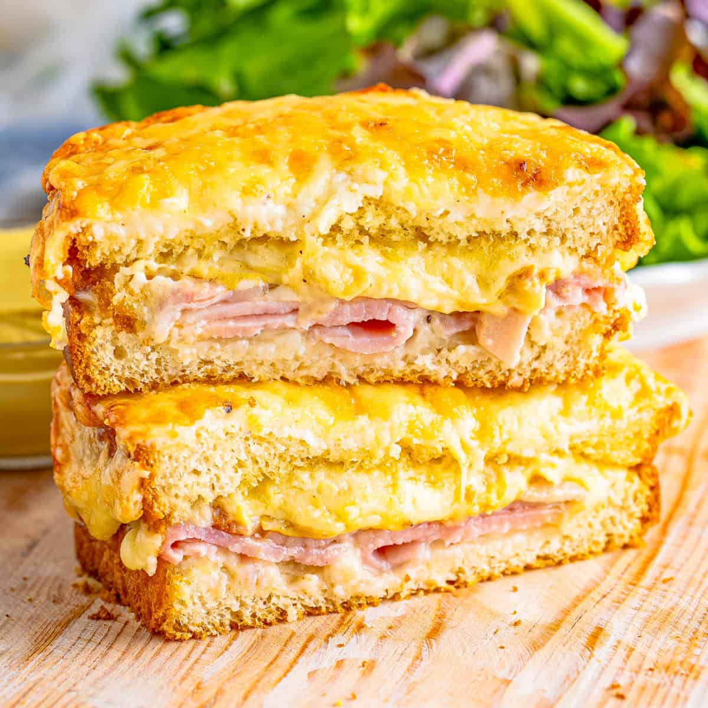

Leftover Ham Croque Monsieur

Ingredients
- Leftover Ham
- French Roll
- Butter
- Flour
- Milk
- Gouda
Instructions
Make the bechamel
- Brown butter in pan over medium low heat
- Add equal part flour to butter
- Stir until completely incorporated
- Slowly add milk and stir continuously
- Add gouda in pieces until completely melted
Prepare Sandwich
- Slice french roll in half long ways
- Scoop out extra bread from one side
- Fill scooped half with leftover ham
- Spread bechamel over other side
Bake
- Place sandwich in toaster oven
- With sandwich face open, bake for 4 minutes at 375 degrees F
- Toast with sandwich face open for 2 minutes